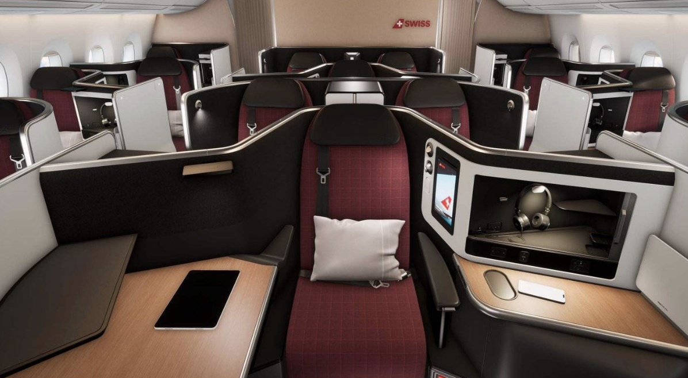
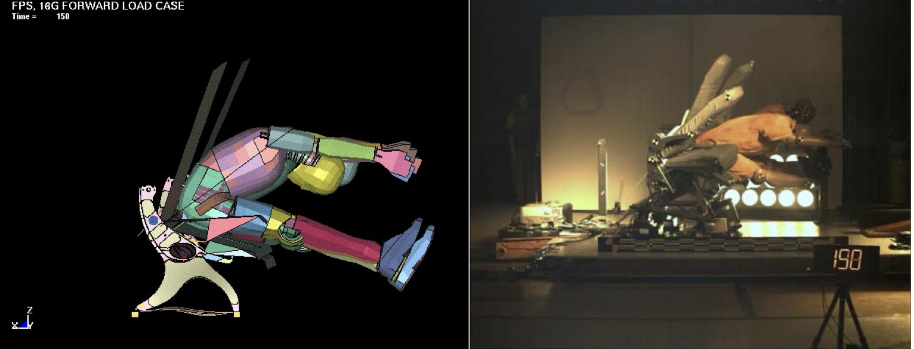

Intégré au bureau de Recherche & Technologie (R&T) au sein de la division Sièges de classe Affaires et Première (Stelia Aerospace), ma mission principale consiste à modéliser, corréler et prédire le comportement dynamique des futurs sièges d'avion avant leur certification, notamment pour les essais de crash réglementaires (normes dynamiques 14g et 16g).

Récupération d'essais expérimentaux (écrasement de mousse par vérin en quasi-statique et dynamique) pour modélisation sous HyperMesh / Radioss. J'ai créé une méthodologie stricte pour la reproduction des futures caractérisations, permettant d'extraire des cartes matériaux fiables pour les modèles de sièges complets.
Étant le premier du bureau d'études à explorer l'automatisation, j'ai rédigé des guidelines complètes et développé des scripts (Tcl / HWC). J'ai également créé des templates de calculs dynamiques pour uniformiser les méthodologies et standardiser les rapports finaux de tous les futurs collaborateurs.
Élaboration du plan d'essais pour les futures campagnes expérimentales sur les ceintures de sécurité. L'objectif est de garantir que les données physiques récoltées permettront une corrélation optimale pour peaufiner notre modèle numérique prédictif.
Lors des simulations de crash, le positionnement du mannequin (ATD - Anthropomorphic Test Device) dans le modèle doit correspondre exactement à la réalité des essais physiques. Actuellement réalisée manuellement, cette tâche est chronophage et complexe.
Ma solution en cours de développement : Création d'un outil d'automatisation exploitant un système de ressorts virtuels et une interface graphique. L'utilisateur y entre les coordonnées des points de référence issues des essais, et le modèle ajuste automatiquement la posture et la cinématique du mannequin sous HyperMesh.
